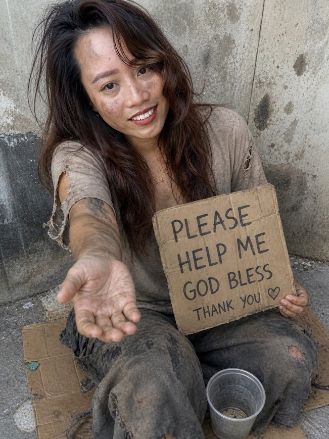
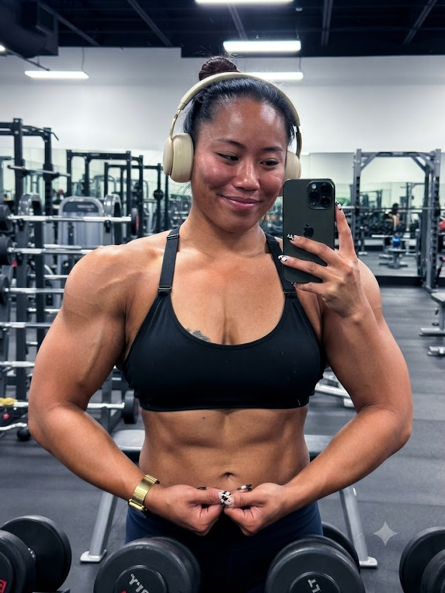

Some are born into greatness. Others simply decide today will be different.
Begin the Journey
Behold our hero: asking for spare change, mildly under-caffeinated, and approximately one rejection email away from alphabetizing her spice rack out of sheer boredom. Even her houseplants have started side-eyeing her.
But she isn't defeated. She's simply waiting for the next chapter — even if she doesn't know it yet.
Sometimes life removes the road beneath your feet so you'll finally build your own.
Every great adventure starts with learning. The books pile higher. Coffee consumption reaches dangerous levels. Sticky notes colonize every flat surface in the apartment.
Somewhere between chapter twelve and her fourth highlighter, greatness quietly showed up.
As long as you study hard, you can achieve anything you set your mind to.

Becoming a teacher takes endurance: early mornings, patience, resilience, energy, and an unreasonably good sense of humor. So she trains like it's a championship fight — dramatic music included, slow motion optional but encouraged.
You don't conquer classrooms. You conquer yourself first.
Training your body is just as important as training your mind.
Graduation feels like winning a million bucks. Confetti everywhere. Triumphant music. Parents crying. Professors suddenly remembering they always knew she'd make it.
When you succeed once, you discover you're capable of succeeding again.
The world is your stage.
Her story isn't rare. It isn't reserved for the chosen few who already had it figured out. Every person standing under this same sky carries the same raw material she started with — uncertainty, a few bad days, and a stubborn spark that refused to go out.
She didn't become extraordinary by being born that way. She became extraordinary by deciding to start.
Look up. Every star you see was once just a point of light no brighter than yours — and every single one of us has the capability to become one.
Every person carries two voices inside them. Right before the biggest leap of her life, she hears both, loud and clear.
Sometimes we don't wait for heroes. Sometimes we become them. Every classroom deserves someone brave enough to believe in tomorrow.
All the struggle, the studying, the failures and small victories led somewhere she didn't expect: quiet confidence. A sense of purpose that doesn't need to prove itself anymore.
Now she smiles, because she knows exactly how she can help someone else find their own way.
One day you'll find your own peace. And then you'll spend the rest of your life helping others find theirs.
Becoming a teacher isn't about having all the answers. It's about helping someone else discover theirs.